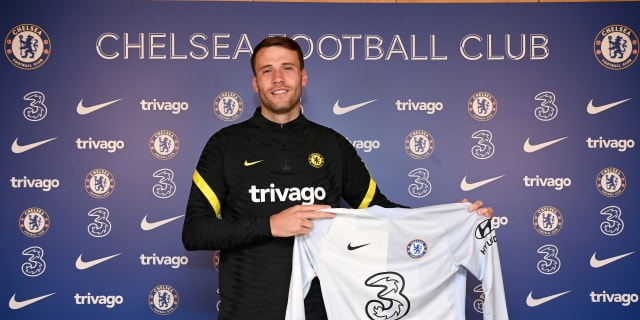

MARCUS BETTINELLI
MARCUS BETTINELLIเบตติเนลลี่ หมดสัญญากับฟูแล่มและย้ายมาค้าแข้งกับพวกเรา โดยเขาจะสมทบตำแหน่งนายทวารหลังจาก วิลลี่ กาบาเยโร่ อำลาสโมสรไป
ผู้รักษาประตูที่มีส่วนสูง 193 เซนติเมตร ใช้เวลาในถิ่นคราเวน ค็อตเทจกว่าหนึ่งทศวรรษ ลงเฝ้าเสาให้ “เจ้าสัวน้อย” 120 นัด และเคยติดทีมชาติอังกฤษ รุ่นอายุไม่เกิน 21 ปีสมัยเริ่มต้นเส้นทางลูกหนัง
เริ่มต้นฤดูกาล 2015/16 ในฐานะมือหนึ่งของสโมสร ดาวเตะผู้ที่เกิดและโตในลอนดอน ประสบอาการบาดเจ็บบริเวณหัวเข่าในการแข่งขันนัดที่ 3 ของซีซั่นจนต้องพักยาวถึง 7 เดือนด้วยกัน เขากลับมาลงสนามในเดือนมีนาคม และเฝ้าเสาใน 9 นัดสุดท้ายของฤดูกาล แต่ฟูแล่มยังไม่สามารถเลื่อนชั้นกลับขึ้นมา หลังจบในอันดับ 20 ของตาราง
ซีซั่นถัดมาเขาได้ลงสนามน้อยลง แต่ เบตติเนลลี่ ได้เฝ้าเสาในการแข่งขันเพลย์ออฟ รอบรองชนะเลิศทั้ง 2 นัดกับเรดดิ้ง ซึ่งแม้ “เจ้าสัวน้อย” จะล้มเหลว แต่พวกเขาแก้ตัวได้สำเร็จในอีก 12 เดือนถัดมาเมื่อทีมของ สลาวิซ่า โยคาโนวิช คว้าตั๋วเลื่อนชั้นกลับสู่พรีเมียร์ ลีกด้วยการเอาชนะแอสตัน วิลล่า ผลงานของ เบตติเนลลี่ ถือว่าโดดเด่นในช่วงเวลาสำคัญของฤดูกาล โดยฟูแล่มเก็บคลีนชีต 3 นัดในรอบเพลย์ออฟทั้ง 3 นัด

เมื่อกลับขึ้นสู่พรีเมียร์ ลีก เบตติเนลลี่ ได้เดบิวต์บนลีกสูงสุดจากแมตช์ที่ต้นสังกัดเอาชนะเบิร์นลี่ย์ 4-2 ในเดือนสิงหาคม ปี 2018 ซึ่งเป็นจุดเริ่มต้นของการลงตัวจริง 7 นัดติดต่อกันในลีก ผลงานของผู้รักษาประตูรายนี้ ทำให้เขาถูก แกเร็ธ เซาท์เกต เรียกตัวติดทีมชาติอังกฤษในโปรแกรมเบรคทีมชาติครั้งแรกของฤดูกาล และถูกเรียกอีกครั้งในเดือนตุลาคม แต่เขาไม่ได้ลงเฝ้าเสาให้กับทรี ไลอ้อนส์
ถึงแม้จะโชว์ฟอร์มได้ดีในช่วงเริ่มต้นซีซั่น แต่ผลงาน 6 เกมที่ไร้ชัยชนะทำให้ เซร์คิโอ ริโก้ แย่งบทบาทมือหนึ่งในช่วงเวลาที่เหลือของฤดูกาล ฟูแล่ม คว้าชัยชนะในลีกได้เพียง 7 นัด ทำให้พวกเขาตกชั้นกลับสู่แชมเปี้ยนชิพทันที
ฤดูกาล 2019/20 เบตติเนลลี่ ได้ลงสนามอีก 14 นัด ก่อนที่อาการบาดเจ็บจะรบกวนเขาอีกครั้ง และซีซั่นที่แล้ว เขาได้ย้ายไปเล่นแบบยืมตัวให้กับมิดเดิลสโบรห์ โดยเฝ้าเสา 42 นัด เก็บ 13 คลีนชีตพา “สิงห์แดง” จบอันดับที่ 10 ในลีกรองของอังกฤษ
SOCIAL MEDIA
 |
|